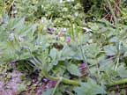
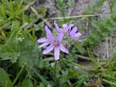
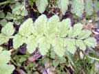
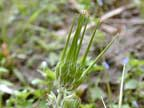
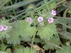

Storksbill
Erodium cicutarium and E. moschatum
Other names
musky storksbill
Description
Hairy, musk scented annual with rosettes up to 30cm across, and up to 50 cm tall when flowering. Flower: mauve pink, rarely white, 12 14mm in diameter, in five to twelve flowered umbels on long red, hairy stalks. Petals five, undivided. Sepals five, green, pointed, hairy. Stamen filaments pinkish, anthers dark purple. Flowers September May. Fruit: Long beaked capsules up to 4 cm long, splitting and twisting into five corkscrew strips which can screw themselves into loose soil to bury the attached seeds. Leaves: In rosettes up to 30 cm across, finely divided, fern like. Stipule tips at bases of leaf stalks triangular and sharply pointed. Stems: Red, hairy, prostrate or erect. Roots: Deep taproot.
Similar plants
E. cicutarium and E. moschatum are very similar. The size and shape of the plants depend on how fertile their site is. The cranesbills are related plants with similar flowers and fruit. Soft cranesbill is common toxicity unknown.
Distribution
Habitat: arable land, poor pasture, dry tussock and grassland. Common in drier coastal and lowland North Island, South Island and Chatham Island, and uncommon in wetter districts. Originally from Europe, north Africa, temperate Asia.
Toxin
Unknown
Species affected
Sheep (lamb) and cattle. Common in the Manawatu, reported in the S. Island and Australia 100 newly shorn four to five month old lambs turned out into sandy country where the herbage was chiefly storksbill developed typical photosensitisation.
Clinical signs acute
Typical sign of photosensitisation in lamb (dermatitis and conjunctivitis etc.) "spring eczema". Cattle stagger, weakness of the forelegs and walking on the knees when exercised incoordination.
Clinical signs chronic
Post mortem signs
Lesions on skin and liver maybe found.
Diagnosis
Clinical examination, history, clinical signs and presence of plant in the paddock
Differential diagnosis
Other causes of photosensitisation.
Treatment
Prognosis
Prevention
References
Conner H.E. The Poisonous Plants In New Zealand. 1992. GP Publications Ltd, Wellington
Cooper M R, Johnson A W. Poisonous Plants and Fungi in Britan: Animals and Human Poisoning. Her Majesty’s Stationary Office. London. 1998
Hurst E. The poisonous plants of New South Wales. 1942, Snelling Printing Works, Sydney
Parton K, Bruere A.N. and Chambers J.P. Veterinary Clinical Toxicology, 2nd ed. 2001. Veterinary Continuing Education Publication No. 208
Surveillance, 1980, 7 (4), 17 An unusual photosensitisation in lambs.
|  plant |
 |
|
|
 |
|
|
|
 |
||
|
 |
|
|